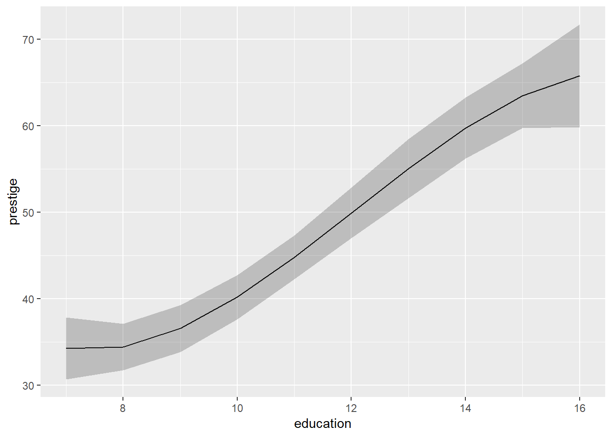
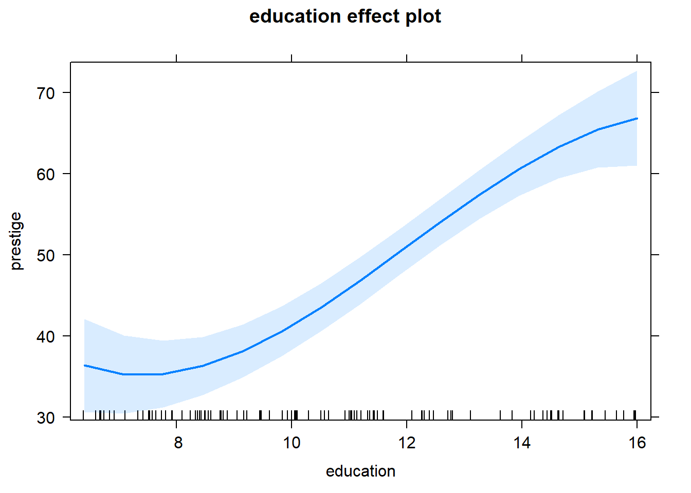
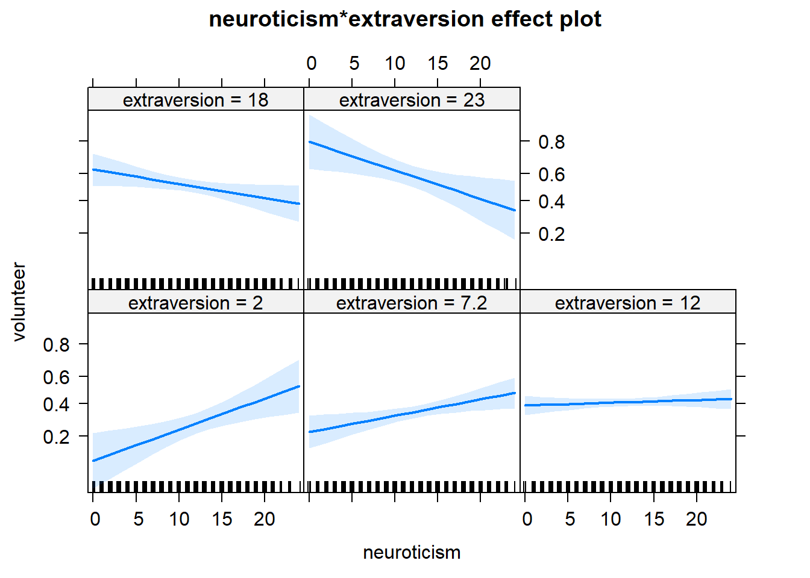
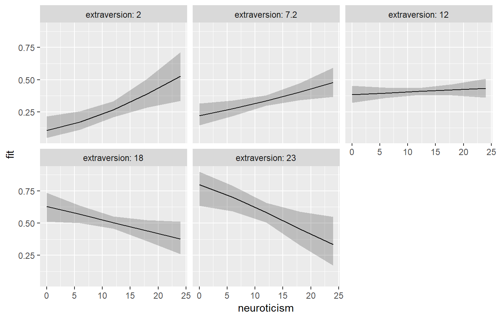
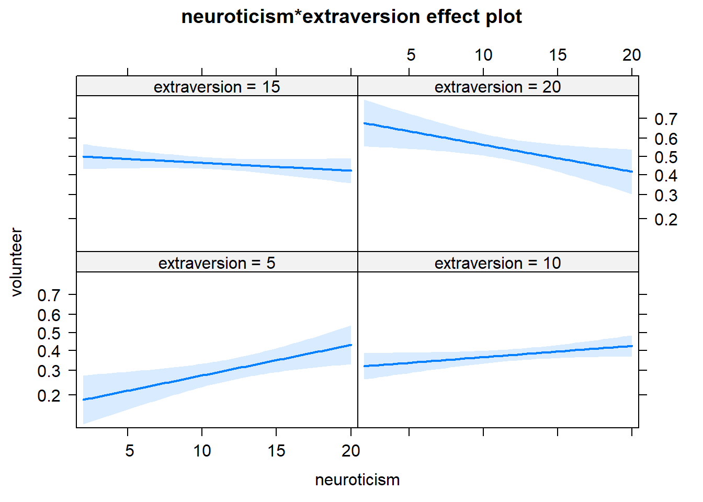
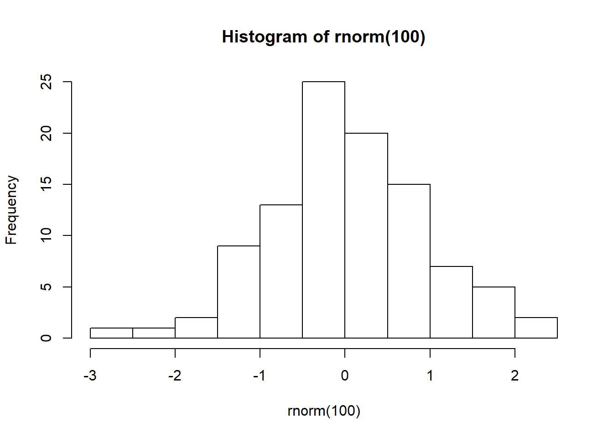
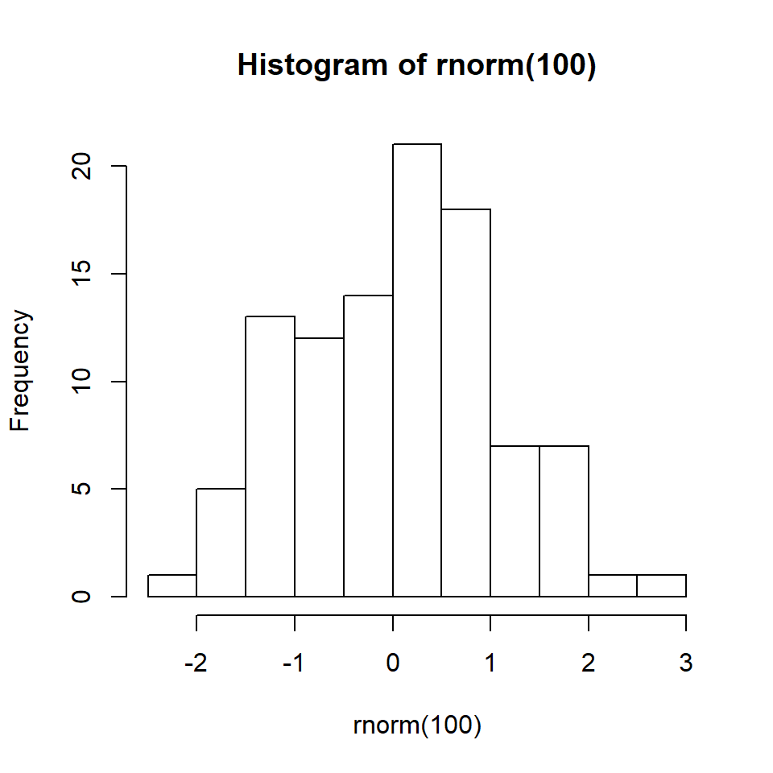

Model Visualization
Get Ready!
- Download modelvizR.zip to your computer. It contains an R script and the content of this page as a slide deck. Save it somewhere easy to find.
- Unzip modelvizR.zip. (Mac: Double click the zipped file. Win: Right-click on the zip file and select “Extract All…”)
Motivation
Statistical modeling in R often produces a large table of coefficients. Some of these numbers can be hard to interpret because of…
- scale (eg, log-odds)
- interactions
- nonlinear coefficients (eg, polynomials or splines)
In addition, while R prints these tables acceptably in the console, they’re not quite ready for papers and presentations.
This session seeks to address these issues.
Goals
Get you started with…
- visualizing and communicating statistical models with effect plots
- using R Markdown to blend exposition, R code and R output into nice reports and presentations
- creating nicely-formatted tables of model summaries for papers and presentations
Example: statistical model with non-linear effects
Modeling Pineo-Porter prestige score for occupation as a function of average occupation income, percentage of women in occupation, and average education of people in occupation. (example from effects package; n = 102; 1971)
library(effects)mod.pres <- lm(prestige ~ log(income, 10) +
poly(education, 3) +
poly(women, 2),
data=Prestige)Notice the model specifies the effects of education and women as non-linear (polynomials of degree 3 and 2, respectively).
Summary of statistical model
What are we to make of these coefficients? It is apparent the effects are significant. We should shift focus to the pattern and magnitude of the effects, as well as the scientific significance.
summary(mod.pres)##
## Call:
## lm(formula = prestige ~ log(income, 10) + poly(education, 3) +
## poly(women, 2), data = Prestige)
##
## Residuals:
## Min 1Q Median 3Q Max
## -13.960 -4.983 0.372 3.787 17.092
##
## Coefficients:
## Estimate Std. Error t value Pr(>|t|)
## (Intercept) -62.910 15.916 -3.953 0.000149 ***
## log(income, 10) 29.178 4.228 6.901 5.74e-10 ***
## poly(education, 3)1 106.494 9.284 11.471 < 2e-16 ***
## poly(education, 3)2 15.045 6.977 2.156 0.033577 *
## poly(education, 3)3 -13.348 6.984 -1.911 0.058972 .
## poly(women, 2)1 11.978 9.384 1.276 0.204893
## poly(women, 2)2 18.465 6.828 2.704 0.008110 **
## ---
## Signif. codes: 0 '***' 0.001 '**' 0.01 '*' 0.05 '.' 0.1 ' ' 1
##
## Residual standard error: 6.721 on 95 degrees of freedom
## Multiple R-squared: 0.8564, Adjusted R-squared: 0.8474
## F-statistic: 94.46 on 6 and 95 DF, p-value: < 2.2e-16Getting expected values with our model
Our model is just a math formula. Plug in some values for income, education and women and it will give an expected prestige score.
To better understand the effect of education, we could set income to, say, 6000 and women to 20, and then get expected prestige scores for multiple values of education (say, 8 - 12)
predict(mod.pres, data.frame(income = 6000,
women = 20,
education = 8:12))## 1 2 3 4 5
## 34.44333 36.58763 40.20733 44.81837 49.93670Uncertainty in our expected values
Our expected values are just estimates. There is uncertainty in how close our estimate is to the true value. We can use predict to calculate 95% confidence intervals for our expected values
predict(mod.pres, data.frame(income = 6000,
women = 20,
education = 8:12),
interval = "confidence")## fit lwr upr
## 1 34.44333 31.75006 37.13660
## 2 36.58763 33.87120 39.30407
## 3 40.20733 37.65314 42.76152
## 4 44.81837 42.29673 47.34001
## 5 49.93670 47.00818 52.86521An effect plot
We can plot the expected prestige values for the varying levels of education along with the uncertainty, creating an effect plot. The effect of education is more pronounced from 10 - 14. This is hard to see in the table of coefficients.
library(ggplot2)
p.out <- predict(mod.pres, data.frame(income = 6000,
women = 20,
education = 7:16),
interval = "confidence")
ggplot(as.data.frame(p.out), aes(x = 7:16, y = fit)) +
geom_line() +
geom_ribbon(aes(ymin = lwr, ymax = upr),
alpha = 1/4) +
labs(x = "education", y = "prestige")
Using the effects package
The effects package provides functions to help us more easily create effect plots. Here’s how we could create the effect plot on the previous slide.
library(effects)
plot(Effect("education", mod.pres))
Creating a data frame for plotting
The effects package has a plot method that generates plots using the lattice package.
However it’s straightforward to use Effect to create a data frame for creating your own plots.
Call as.data.frame on an Effect object and save. Example:
e <- Effect("education", mod.pres)
e.df <- as.data.frame(e)
head(e.df, n = 3)## education fit se lower upper
## 1 6.4 36.36091 2.882292 30.63884 42.08299
## 2 8.8 37.09672 1.721376 33.67936 40.51408
## 3 11.0 45.88984 1.464258 42.98292 48.79676Using an effects data frame for plotting
ggplot(e.df, aes(x = education, y = fit)) +
geom_line() +
geom_ribbon(aes(ymin = lower, ymax = upper),
alpha = 1/4)
Another example: statistical model with interaction
Modeling the probability of volunteering for psychological research as function of sex, neuroticism, and extraversion. neuroticism and extraversion are numeric values from a personality inventory. Notice the interaction. (example from effects package; n = 1421; 1987)
mod.cowles <- glm(volunteer ~ sex +
neuroticism + extraversion +
neuroticism:extraversion,
data=Cowles, family=binomial)Summary of statistical model
What are we to make of the interaction coefficient? It is apparent the interaction is significant, but how do neuroticism and extraversion interact to affect the probability of volunteering?
summary(mod.cowles)##
## Call:
## glm(formula = volunteer ~ sex + neuroticism + extraversion +
## neuroticism:extraversion, family = binomial, data = Cowles)
##
## Deviance Residuals:
## Min 1Q Median 3Q Max
## -1.4749 -1.0602 -0.8934 1.2609 1.9978
##
## Coefficients:
## Estimate Std. Error z value Pr(>|z|)
## (Intercept) -2.358207 0.501320 -4.704 2.55e-06 ***
## sexmale -0.247152 0.111631 -2.214 0.02683 *
## neuroticism 0.110777 0.037648 2.942 0.00326 **
## extraversion 0.166816 0.037719 4.423 9.75e-06 ***
## neuroticism:extraversion -0.008552 0.002934 -2.915 0.00355 **
## ---
## Signif. codes: 0 '***' 0.001 '**' 0.01 '*' 0.05 '.' 0.1 ' ' 1
##
## (Dispersion parameter for binomial family taken to be 1)
##
## Null deviance: 1933.5 on 1420 degrees of freedom
## Residual deviance: 1897.4 on 1416 degrees of freedom
## AIC: 1907.4
##
## Number of Fisher Scoring iterations: 4Examine interaction with an effect plot
Using the effects package. It appears the effect of neuroticism on volunteer is positive for lower values of extraversion but negative for higher values of extraversion.
plot(Effect(c("neuroticism","extraversion"), mod.cowles))
Create a data frame for plotting
Calling as.data.frame on an Effect object returns a data frame we can use to create our own plots.
eff.out <- Effect(c("neuroticism","extraversion"),
mod.cowles)
eff.df <- as.data.frame(eff.out)
head(eff.df, n = 3)## neuroticism extraversion fit se lower upper
## 1 0 2 0.1056408 0.04027265 0.0487301 0.2140600
## 2 6 2 0.1716423 0.03669815 0.1110644 0.2557552
## 3 12 2 0.2665883 0.03139195 0.2097077 0.3324076Effect plot using ggplot
ggplot(eff.df, aes(x = neuroticism, y = fit)) +
geom_line() +
geom_ribbon(aes(ymin = lower, ymax = upper),
alpha = 1/4) +
facet_wrap(~extraversion, labeller = "label_both")
The ggeffects package
This workshop focuses on the effects package by John Fox.
Another package of interest is the ggeffects package by Daniel Lüdeck.
The ggeffects package provides plotting functions that produces plots using ggplot2.
ggeffects is a younger package, currently at version 0.9. The effects package is older, currently at version 4.1.
Customizing effect estimates
We may want to set the levels of the predictors in our effect plots as opposed to letting the effects package do it for us.
The same with those predictors that do not appear in the plot. Those are typically set to the mean values.
We can do that with the xlevels and fixed.predictors arguments for the Effect function.
Setting values of the focal predictors
The effects package calls those predictors that appear in effect plots “focal predictors”. We can set focal predictor values using the xlevels argument.
The xlevels argument requires a named list, where the names are the variables.
By default numeric predictors are represented by five values equally spaced over their range and then rounded to ‘nice’ numbers
How to see the focal predictor values
The Effect function returns a list that contains an object called x. The x object is a data frame that contains the focal predictor values.
e <- Effect(c("neuroticism","extraversion"), mod.cowles)
sapply(e$x, unique)## neuroticism extraversion
## [1,] 0 2.0
## [2,] 6 7.2
## [3,] 12 12.0
## [4,] 18 18.0
## [5,] 24 23.0Setting values of the focal predictors
Set neuroticism to range from 2 - 20 and extraversion to 5, 10, 15, and 20.
e <- Effect(focal.predictors = c("neuroticism",
"extraversion"),
mod = mod.cowles,
xlevels = list(neuroticism = 2:20,
extraversion = c(5,10,15,20)))The updated effect plot
plot(e, rug=FALSE)
Setting values of the fixed predictors
The effects package calls those predictors that do not appear in effect plots “fixed predictors”. We can set fixed predictor values using the fixed.predictors argument.
The fixed.predictors argument requires a named list, where the names are either given.values or typical.
given.valuessets specific values of a fixed predictor.typicaldefines the function to apply to fixed predictors, such asmean(default) ormedian.
In most cases, the defaults for fixed predictors are probably fine. But is good to know what they’re being set to and how to change them.
How to see the fixed predictor values
The Effect function returns a list that contains an object called model.matrix. The model.matrix contains the values used to generate the effect estimates
head(e$model.matrix)## (Intercept) sexmale neuroticism extraversion neuroticism:extraversion
## 1 1 0.4510908 2 5 10
## 2 1 0.4510908 3 5 15
## 3 1 0.4510908 4 5 20
## 4 1 0.4510908 5 5 25
## 5 1 0.4510908 6 5 30
## 6 1 0.4510908 7 5 35Notice sexmale is set to 0.45, which is the proportion of males.
Example of setting values of fixed predictors
Set the sex predictor to “male”. Notice we have to use the label “sexmale” since that is what is used in the model output. We also have to use the number 1 since sex is a factor.
e <- Effect(focal.predictors = c("neuroticism",
"extraversion"),
mod = mod.cowles,
fixed.predictors =
list(given.values = c(sexmale = 1)))Example of setting values of fixed predictors
Change the “typical” value from the mean to the median for the Prestige model.
e <- Effect("education", mod.pres,
fixed.predictors =
list(typical = median))The predictors not in the model, income and women, will be set to their median value instead of their mean value.
Communicating results
Once we fit and visualize statistical models, we often need to communicate those results to an audience.
One approach is to copy-and-paste results and plots out of R and into a program such as MS Word or PowerPoint.
Two major drawbacks to that approach:
- manual and inefficient; prone to human error
- creates a lot of repeated steps if you need to update your analysis (ie, have to copy-and-paste stuff again)
R Markdown
A better approach to communicating results is the R Markdown platform.
R Markdown allows you to combine exposition, data, R code, output and graphics in one PDF, HTML or Word document.
It is excellent and unrivaled for creating presentations and informal reports that feature analyses performed with R.
It is also rapidly progressing as a platform for writing journal articles.
What is R Markdown?
Markdown is a simple markup language. For example:
- To italicize “very” using HTML, we type
<em>very</em> - To italicize “very” using Markdown, we type
_very_
R Markdown includes additional markup syntax to execute and display R code. For example:
The adjusted R-squared of the prestige model is 0.85.
That previous line was generated with the following R Markdown syntax:
The adjusted R-squared of the prestige model is `r round(summary(mod.pres)$adj.r.squared, 2)`
Starting an R Markdown document
Writing out these instructions makes it appear more complicated than it really is.
In RStudio, go to File…New File…R Markdown…
Select either Document or Presentation.
Enter a title for your document or presentation
Select the output format (HTML, PDF, Word) and click OK. RStudio generates an
Rmdfile with some text and formatting to get you started.
The R Markdown dialog

The R Markdown template

Knitting an R Markdown document
R Markdown uses the knitr package to compile the Rmd file into output. Hence, we “knit” the Rmd file.
Before you knit for the first time, save the file. RStudio will automatically append the Rmd extension.
To knit a file, click the Knit button to generate the output file. For example, if you selected HTML as the output format, RStudio will generate an HTML file and show it in a preview window.
The HTML file will have the same name as your Rmd file and be saved in the same location.
Knit the file as often as you like to see your changes.
Ctrl + Shift + K(Win/Linux)Command + Shift + K(Mac)
The result of knitting the Rmd template

Inserting an R code chunk
R Code in an R Markdown file is called a “chunk”. To insert a code chunk:
- Ctrl + Alt + I (Win/Linux)
- Command + Option + I (Mac)
The code chunk is highlighted and delimited by 3 backticks. The opening delimiter also has {r}.

Enter R code between the delimiters.
Entering R code
After you enter R code and knit the Rmd file, the R code will execute and the output will be displayed.
For example, the following code chunk would randomly sample 100 observations from a standard Normal distribution and plot a histogram.

This produces the following plot.
hist(rnorm(100))
Using options with code chunks
We can add options after the r in {r} to change how code is executed. Separate multiple options with a comma.
Some common options:
echo=TRUE: show R code with the outputecho=TRUE, eval=FALSE: show R code but don’t run itmessage=FALSE: supress messages (useful when loading packages that print messages in the console)warning=FALSE: supress warning messagesfig.height=x, fig.width=x: set the size of the output plot

Example of code chunk using specified options
hist(rnorm(100))
R Markdown tips
R Markdown files are compiled in their own environment; that means any data or packages need to be loaded in the R Markdown file
The header of an R Markdown file is called the YAML header; it is usually fine as is, but that’s where you can change the author, title or date if necessary; also where you create a TOC
R Markdown files (
Rmd) are text files and can be viewed in any text editor or placed under version control using a service such as Git/GitHubIf you get an error trying to “knit” an R Markdown file and you’re not sure what it means, try copying-and-pasting the error into Google
Remember, R Markdown generates an output file, such as an HTML or PDF file; the output file is usually what you want to show or send to your audience
Time to practice
The best way to learn R Markdown is to start using it. Let’s do an exercise:
https://at.virginia.edu/2X6Vcf8
R Markdown resources in RStudio:
- Help…Markdown Quick Reference
- Help…Cheatsheets…R Markdown Cheatsheet (PDF file)
- Help…Cheatsheets…R Markdown Reference Guide (PDF file)
Formatting coefficient tables with stargazer
Recall the summary tables of our models.
They look OK in the console, but when it’s time for publication or presentation we’ll probably want to modify.
The stargazer package generates LaTeX code, HTML code and ASCII text for well-formatted tables.
stargazer basic usage
Use the stargazer function with a model object. For example:
library(stargazer)
stargazer(mod.cowles)The produces a regression table formatted with LaTeX code.
Use the type argument to switch format to “text” or “html”. For example:
stargazer(mod.cowles, type = "text")Example of default stargazer table (text)

Common stargazer options
- Using
stargazerwith multiple models produces a single table with results from multiple models - Use the
titleargument to give the table a title (eg:title = "Regression results") - use the
omit.table.layoutargument to specify which parts of the table should be omitted from the output (eg,omit.table.layout = "sn"drops the model stats and p-value notes) - Use the
outargument to save the table to an external file (eg:out = "table1.tex") - The next slide shows the text table created with the following options:
library(stargazer)
stargazer(mod.cowles, type = "text",
title = "Regression results",
omit.table.layout = "sn")Example of stargazer table

Using stargazer with R Markdown
- To insert a
stargazertable into R Markdown, add the following code chunk optionsresults ='asis'(treat HTML as HTML, etc)message = FALSE(don’t display stargazer start-up message)
- For HTML output, set
type = "html"instargazer() - For PDF output, set
type = "latex"andheader = FALSEinstargazer()
Example of stargazer table in R Markdown
library(stargazer)
stargazer(mod.cowles, type = "html",
title = "Regression results",
header = FALSE,
single.row = TRUE)| Dependent variable: | |
| volunteer | |
| sexmale | -0.247** (0.112) |
| neuroticism | 0.111*** (0.038) |
| extraversion | 0.167*** (0.038) |
| neuroticism:extraversion | -0.009*** (0.003) |
| Constant | -2.358*** (0.501) |
| Observations | 1,421 |
| Log Likelihood | -948.720 |
| Akaike Inf. Crit. | 1,907.440 |
| Note: | p<0.1; p<0.05; p<0.01 |
Modifying the coefficient names
The covariate.labels argument allows you to change the coefficient names.
stargazer(mod.cowles, type = "html",
title = "Regression results",
header = FALSE,
covariate.labels = c("Male", "Neuroticism",
"Extraversion", "Interaction"),
single.row = TRUE)| Dependent variable: | |
| volunteer | |
| Male | -0.247** (0.112) |
| Neuroticism | 0.111*** (0.038) |
| Extraversion | 0.167*** (0.038) |
| Interaction | -0.009*** (0.003) |
| Constant | -2.358*** (0.501) |
| Observations | 1,421 |
| Log Likelihood | -948.720 |
| Akaike Inf. Crit. | 1,907.440 |
| Note: | p<0.1; p<0.05; p<0.01 |
stargazer styles
stargazer provides built-in support for several social science academic journals. Use the following with the style argument:
"aer"American Economic Review"ajps"American Journal of Political Science"ajs"American Journal of Sociology"asq"Administrative Science Quarterly"asr"American Sociological Review"apsr"American Political Science Review"demography"Demography"io"International Organization"jpam"Journal of Policy Analysis and Management"qje"Quarterly Journal of Economics
stargazer table with apsr style
stargazer(mod.cowles, type = "html",
style = "apsr",
title = "Regression results",
header = FALSE,
covariate.labels = c("Male", "Neuroticism",
"Extraversion", "Interaction"),
single.row = TRUE)| volunteer | |
| Male | -0.247** (0.112) |
| Neuroticism | 0.111*** (0.038) |
| Extraversion | 0.167*** (0.038) |
| Interaction | -0.009*** (0.003) |
| Constant | -2.358*** (0.501) |
| N | 1,421 |
| Log Likelihood | -948.720 |
| AIC | 1,907.440 |
| p < .1; p < .05; p < .01 | |
stargazer has many more options
- The
stargazerfunction is very powerful and has many arguments - Go to
?stargazerand run the Examples - See also the
stargazervignette:vignette("stargazer") - Other R packages for formatting coefficient tables include
- xtable
- texreg
- apsrtable
- huxtable
Time to practice
The best way to learn stargazer is to start using it. Let’s do an exercise:
References
Fox, J. and S. Weisberg (2018). Visualizing Fit and Lack of Fit in Complex Regression Models: Effect Plots with Partial Residuals. Journal of Statistical Software 87:9, 1-27, https://www.jstatsoft.org/article/view/v087i09
John Fox and Sanford Weisberg (2019). An R Companion to Applied Regression, 3rd Edition. Thousand Oaks, CA http://tinyurl.com/carbook
Harrell, F. E. (2015). Regression Modeling Strategies. Springer.
Hlavac, Marek (2018). stargazer: Well-Formatted Regression and Summary Statistics Tables. R package version 5.2.1. https://CRAN.R-project.org/package=stargazer
R Markdown web site: https://rmarkdown.rstudio.com/